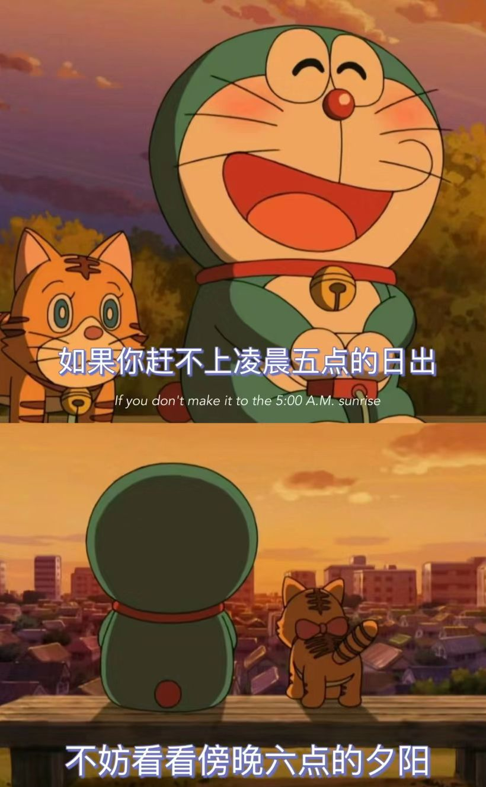

《秋夕》
杜牧
银烛秋光冷画屏，
轻罗小扇扑流萤。
天阶夜色凉如水，
坐看牵牛织女星。
6000字的小说，有男主女主男配女配至少四个角色，按照字数拆成四个章节
章节1男主辜负女主和女配在一起
章节2女主退出情感纠葛追求事业认识男配
章节3男主被女配暗算后悔莫及
章节4女主永不原谅和男配终成眷属。
小说正文
第一章：辜负
李明是校园里公认的阳光男孩，身材高大，笑容灿烂，吸引了无数女生的目光。然而，他的心中却始终牵挂着一个人——王婷。王婷是个温柔善良的女孩，聪明又努力，总是默默支持着李明的梦想。
然而，随着时间的推移，李明的目光逐渐被刘娜吸引。刘娜是个外表美丽、心机深沉的女孩，她在校园中颇具人气，常常引得男生们追逐。李明被她的魅力所迷惑，逐渐忽视了王婷的感受。
“李明，今晚有个聚会，你来吗？”刘娜轻声问道，眼中闪烁着狡黠的光芒。
“当然，刘娜，你的邀请我怎能拒绝？”李明答应得毫不犹豫，心中已然决定。
聚会上，李明与刘娜的互动愈加亲密，王婷则在一旁默默注视着。她的心如刀绞，眼泪在眼眶中打转，但她努力掩饰自己的情绪。王婷心中暗想：“李明会选择我，还是她？”
几天后，王婷终于忍不住，主动找李明谈心。“李明，我们能不能好好聊聊？”
李明微微一愣，随即笑着说：“当然，婷儿，你说吧。”
我……我觉得你最近有些变化。”王婷小心翼翼地说道，语气中满是关切。
“没事的，婷儿，我只是忙于学习。”李明轻松地回应，心中却暗自期待刘娜的消息。
然而，王婷并不满足于这个答案。她的直觉告诉她，李明的心已经不再属于她。最终，在一次聚会上，王婷无意间听到李明与刘娜的对话。李明向刘娜表白，刘娜则笑着答应。
“你怎么可以这样？”王婷心如死灰，泪水夺眶而出。她转身离开，心中满是失落与绝望。
李明在追求名利的过程中，渐渐迷失了自己。他与刘娜的关系愈加亲密，而王婷却在一旁默默承受着痛苦。她决定放下这段感情，努力追求自己的事业。
第二章：追求事业
心碎的王婷走出了校园，踏入职场。她决定不再依赖任何人，专注于自己的事业。在一家广告公司工作后，她努力工作，逐渐在职场上崭露头角。
在一次项目中，王婷结识了张伟，一个成熟稳重、善解人意的男人。张伟总是在她需要的时候出现，给予她鼓励与帮助。王婷在张伟的陪伴下，逐渐找回了自信。
“王婷，你真棒！”张伟常常这样赞美她，王婷的心中充满了感激。
随着时间的推移，王婷与张伟的关系越来越亲密。他们一起加班、一起分享生活的点滴。王婷发现，自己在事业上取得的成就让她感到无比自信，而张伟的陪伴也让她重新找到了生活的乐趣。
“我从未想过，工作也可以如此快乐。”王婷在一次聚会上对张伟说道。
张伟微笑着回应：“只要你愿意，生活就会给你带来惊喜。”
在张伟的支持下，王婷逐渐放下了对李明的执念，开始享受与张伟的生活。她感到自己在事业与情感上都找到了归属。
第三章：悔恨
与此同时，李明与刘娜的关系并不如他所想象的那样美好。刘娜对李明的态度越来越冷淡，甚至开始暗算他。在一次商业合作中，李明遭遇了刘娜的背叛，事业受到重创。
“你怎么可以这样对我？”李明愤怒地质问刘娜。
刘娜冷冷一笑：“你不是选择了我吗？现在的你，只是我手中的棋子。”
李明意识到自己当初的选择是多么的错误。他开始反思自己的行为，心中充满了对王婷的愧疚与悔恨。他试图联系王婷，却发现她已经不再需要他。
“王婷，我错了……”李明在心中默念，眼泪夺眶而出。
李明的事业一落千丈，刘娜的真面目让他痛彻心扉。他终于明白，自己失去的不仅是事业，还有王婷那份真挚的爱。
第四章：终成眷属
王婷在张伟的支持下，事业蒸蒸日上。她逐渐放下了对李明的执念，开始享受与张伟的生活。张伟向王婷求婚，王婷欣然接受，决定与他携手共度余生。
“我愿意！”王婷幸福地答应，心中充满了对未来的期待。
李明在失去一切后，明白了真爱的珍贵。他想要挽回王婷，但一切已为时已晚。王婷选择了张伟，李明只能默默祝福。
“愿你们幸福。”李明在心中祈祷，眼中满是遗憾。
最终，王婷与张伟走入婚姻的殿堂，李明只能站在远处，眼中满是悔恨与无奈。他明白，自己再也无法弥补曾经的过错。
在这个复杂的情感纠葛中，每个人都经历了成长与蜕变。王婷选择了事业与爱情的双重幸福，而李明则在悔恨中学会了珍惜。生活总是充满了选择，愿每个人都能找到属于自己的幸福。
|  |
Weekend |
周末 |
| Friday |
周五 |
| Tuesday |
周二 |
| Monday |
周一 |
| hihi |
你好 |